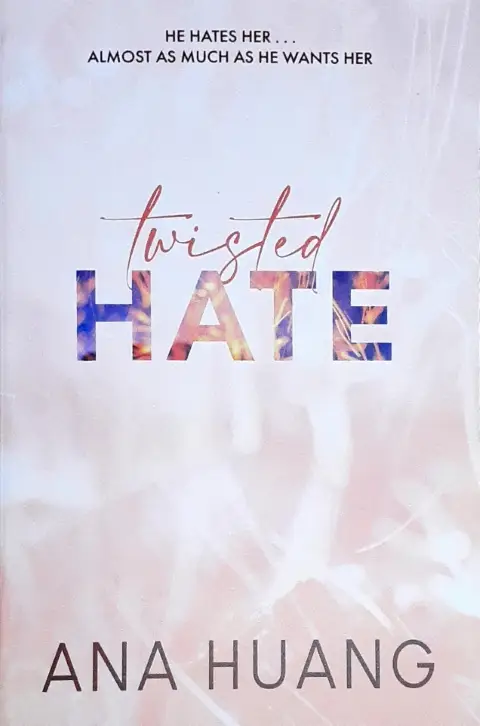

"Twisted Hate" is the third book in the Twisted series by Ana Huang. It follows the story of Josh Chen and Jules Ambrose, who have disliked each other for years. However, when they are
forced to work together, their animosity explodes into an unforgettable night, leading them to propose an enemies with benefits arrangement.
Key Characters
Josh Chen: A gorgeous, cocky, and successful medical student who has never met a woman he couldn't charm, except for Jules. He is haunted by his past and the demons that come back to
haunt him.
Jules Ambrose: An outgoing and ambitious former party girl who is focused on passing the bar exam. She has been a thorn in Josh's side since they met, but she also consumes his thoughts
in a way no woman ever has.
Plot Summary
Josh and Jules have hated each other for years, but their hatred is laced with an undeniable attraction. When they are forced to work together at a clinic, their animosity explodes into
a night of passion. Afterward, they propose an enemies with benefits arrangement with simple rules: no jealousy, no strings attached, and absolutely no falling in love.
As they navigate their arrangement, they realize there is more to each other than meets the eye. Josh and Jules begin to see the good in each other, and their feelings start to deepen.
However, the demons from their pasts catch up with them, forcing them to face truths that could either save them or destroy everything they've worked for.
Themes and Tropes
"Twisted Hate" explores several popular romance tropes, including:
Enemies to Lovers: Josh and Jules have hated each other for years, but their hatred is laced with an undeniable attraction.
Best Friend's Brother/Sister's Best Friend: Jules is Josh's sister's best friend, adding complexity to their relationship.
Enemies with Benefits: Josh and Jules propose an arrangement that allows them to explore their attraction without commitment.
Forced Proximity: Working together at the clinic forces Josh and Jules to spend time together and confront their feelings.
Conclusion
"Twisted Hate" is a steamy and addictive read that will appeal to fans of the enemies to lovers trope. Ana Huang's writing style and the complex characters make this book a page-turner. The story explores the depths of human emotions and the power of love to heal even the most broken of souls.